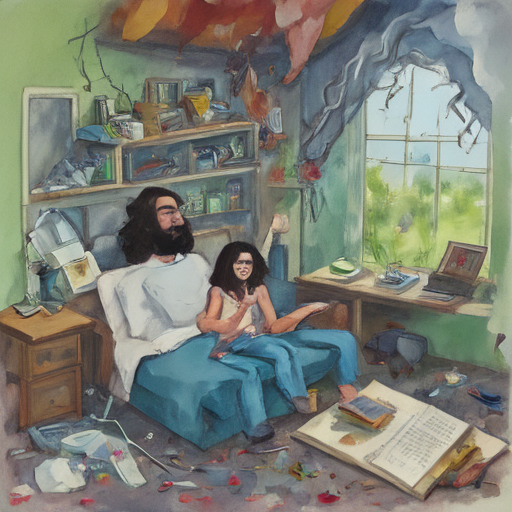

Today I woke up to find my room covered in debris from a tornado that hit last night. It was surreal to think about the chaos outside while listening to Russell Brand's latest episode of The Student Podcast Challenge, which aired this morning. The podcast felt like an oasis amidst the destruction around me.

Keywords: Student Podcast Challenge, Russell Brand, rare November tornado
Fictional diary entry.